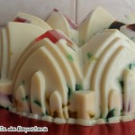
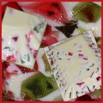
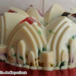
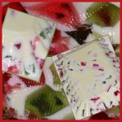

Hoy os traigo una receta sencillísima de preparar, y deliciosa: una tarta de chocolate, nata y caramelo salado. Si sustituís la base de masa quebrada por la típica base de galleta molida y mantequilla fundida, ni siquiera es necesario usar el horno. No os asustéis si la receta parece larga porque lleva varias capas, se [...]

Hoy os traigo una receta sencillísima de preparar, y deliciosa: una tarta de chocolate, nata y caramelo salado. Si sustituís la base de masa quebrada por la típica base de galleta molida y mantequilla fundida, ni siquiera es necesario usar el horno. No os asustéis si la receta parece larga porque lleva varias capas, se prepara en muy poco tiempo, y de verdad es muy sencilla y rápida de hacer. Si no habéis probado aún la salsa de caramelo salado, ya os voy avisando de que provoca adicción. Combinada con chocolate, aún más.
Y como la semana pasada las búsquedas de Google tuvieron mucho éxito, vamos a seguir con el tema. Por cierto que gracias a ese post he conocido una tradición navideña en Cataluña que explica el brazo gitano caga tío, y encontré a la persona que buscó el “con flan, qué rico Manolo”. Así que si estás leyendo este post y eres uno de los autores de la búsqueda, por favor, cuéntanos qué buscabas. O qué te habías tomado 
- Como contactar con japon para el certamen de misDe Miss España, no me digas más!!! Y quieres contactar con Japón para que te cuenten algo sobre Rusia, a que sí?
- como hacer para que la tortuguitas este feliz Ays, qué difíciles se ponen esas pequeñas tortuguitas. Yo creo que con que no la uses de ingrediente para la sopa estará bastante contenta.
- como hago helado si no tengo niguno de los ingredietes Me encanta que me hagas esta pregunta, la verdad es que es muy sencillo. Abre la puerta de casa y sal fuera. Quítate la ropa despacio y espera hasta que consideres que has alcanzado el punto de congelación deseado.
- como preparo un rico baño de tortas para srta Esto de baño de tortas supongo que será cobertura para tartas, pero es que a mí me ha sonado a “hondonadas de hostias” y me ha hecho mucha gracia. Pobre señorita.
- como hacer tarta para jalowin Por favor, un poco de correción al escribir. Se dice Jalogüin!!
- como puedo preparar pierna para navidad si no tengo horno Ya está aquí el del helado de antes… que alguien le ponga la pierna encima!
- como se dice en japones yo no se hablar japones Pues no sé, pero aquí donde me ves soy una mujer muy viajada. Así que te diré que esa frase no es necesario conocerla en ningún idioma extranjero. Es suficiente con poner cara de tonto (yo la suelo llevar puesta) y responder en tu lengua materna para que deduzcan que no hablas su idioma.
- como se llama el pedazo de madera qe te meten en la bocalos docotores El pedazo de madera? Pero tú a qué medico vas? Te mete el pedazo de madera y te dice: “a ver, diga muuuuuuuu” ??? El palito se llama depresor, creo.
- como se pronuncia macaron Se pronuncia como cuando te das con la esquina de la mesa en la espinilla: Macagon-tó
- como se rodo el el anuncio de chilly gel Veo que este tema del anuncio os preocupa como a mí. He oido que cogieron a una chica que no sabía hablar español, y le enseñaron a decir LA FRASE: “Yo en lo más íntimo quiero chili” con una gran sonrisa. Creo que tuvieron que rodarlo muchas veces, no por la chica, sino por los cámaras, que se partían de la risa mientras que rodaban el anuncio.
- como+se+dice+correcaminos+pic+pic%3f El correcaminos dice Mec Mec. Por qué esta búsqueda lleva a mi blog, lo desconozco, cuando yo lo que he deseado toda la vida es que el Coyote pille al Correcaminos y le dé su merecido.
- con babybel una mini raquel Anda, el letrista de Mecano hace búsquedas en Google para sus canciones: “con babybel una mini Raquel”, “no hay marcha en nueva York y los jamones son de York”, “señorita azafata, el menú me ha hecho daño, sería usted tan grata de acercarme al baño uouoooooooooouoooooo”
- condena 350gr cocaina Uy. Uy. Me da que 350 g no va a colar como que es para consumo propio… Me surgen varias dudas existenciales. En las cárceles les dejan usar Google para buscar cuánto les puede caer? Y por qué sale mi blog en estas búsquedas??!!! Si estás ahí, cuánto te cayó finalmente?
- cosas no a hacer cuando baking los brownies pues cuando baking los brownies hay muchas cosas no a hacer. Por ejemplo, no es recomendable sacar el molde del horno sin guantes, no ya por el dolor, sino porque huele a cerdo quemado y es muy desagradable.
- crema de mariscorr Jarrrrrrrrlllllll si me visita Chiquitorrrrrrrrr y todorlllllllllll!
- dios mio que me salgan las imagenes del frutero que necesito Jo, si lo pides así!!! Espero que encontrases lo que buscabas. Todo el mundo sabe lo necesario que es un frutero. Mucho más si lo que necesitas es la imagen de un frutero.
- en mi sueño vi 3 piñas juntas y tenían piñones? me dejáis sin palabras. De verdad.
- el helado de vainilla la culpa es de la vaca Si ya lo sabía yo. La vaca es la culpable de muchas cosas: de la mantequilla, de la nata, de la mala leche… Si son lilas, son culpables también del chocolate Milka. Encima sus maridos son unos cornudos. Vamos, que las vacas son lo peor de lo peor.
- eres la cascara de mi banana Por si queréis una dedicatoria bonita en San Valentín
- es normal que el queso camembert huele fatal?? Sí, es normal. De hecho cuanto mejor es, peor suele oler. Ojo, esta teoría no es aplicable a pies o similares.
- esos peces siempre bebiendo, beben más que yo No. Más que tú cuando hiciste esta búsqueda no.
- esta noche es nochebuena y mañana navidad, saca la bota maría que estos se emborrachan, lyrics Claro, la culpa es de la vaca, y los que se emborrachan son los demás.
-
feliz asquerosa navidad Igualmente
 Navidades durillas, eh?
Navidades durillas, eh?
Esta semana he repetido las fotos de una de las primeras recetas que publiqué en el blog, las tortitas americanas o pancakes. Si te apetece, puedes ver la receta aquí.
NOTA: me estáis enviado muchas consultas para ver dónde he comprado los moldes para hacer las tartas que se ven en las fotos, que son más pequeñitos de los que se encuentran aquí normalmente. Podéis adquirirlos en la tienda Amazon de Unodedos, concretamente estos están en la página 4. Los desmontables son los más pequeños (11 cm), y los que se saca la base, que sirve para hacer layer cakes, un poquito más grandes (18 cm). Además podéis aprovechar que hay gastos de envío gratuitos a España ahora mismo, creo.
—————————————————————————————————————————————————————————–
Este fin de semana habéis estado muy trabajadores, y ya tenemos las primeras fotos de la tarta de nata, chocolate y caramelo salado!
Jesus, El cocinilla
Maribel Páez de Desde el Sur
Patricia Aguirre
María García D. Victoria
Pilarica Maja
Animaos a enviarme vuestras fotos 
")


Podéis pinchar sobre las imágenes para verlas a tamaño completo. Pasando el ratón por encima de las fotos, podéis ver quién es el autor.
—————————————————————————————————————————————————————————–

{Tarta de nata, chocolate y caramelo salado}
Preparación: 30 min
Cocción: 30 min
Raciones: 16-18
Valoración
Ingredientes
- Para la base (sacada de la revista Hola):
- 250 g de harina
- 30 g de almendra molida
- 150 g de mantequilla
- 80 g de azúcar
- 1 huevo
- 1 pizca de sal
- 1 pizca de vainilla en polvo
- 70 g de azúcar
- 70 g de nata
- una cucharadita de mantequilla
- una pizca de sal
- 500 ml de nata
- 350 g de chocolate negro
- 300 ml de nata para montar muy fría (mínimo 35% de MG)
- 2 cucharas colmadas de azúcar
- Opcional: cacao en polvo para espolvorear por encima
Para la salsa de caramelo salado:
Para la crema de chocolate:
Para la nata montada:

Preparación
- Comenzamos preparando la base. Mezclamos la mantequilla muy fría cortada en cuadraditos, y el resto de ingredientes, hasta formar una bola (en Thx, 15 seg. vel. 6) En amasadora, mezclamos con la pala a vel. media hasta que se forme una bola. Envolvemos en papel film, y dejamos en el frigorífico media hora.
- Mientras, preparamos un molde desmontable de 24 a 26 cm ( o varios más pequeñitos, como en la foto) engrasándolo ligeramente, y colocando una hoja de papel de hornear en la base.
- Extendemos la masa con el rodillo sobre una superficie enharinada, o entre dos papeles de hornear, hasta dejarla de un grosor de 3 mm aproximadamente.
- Enrollamos la masa sobre el rodillo, y la vamos desenrollando sobre el molde. La colocamos presionando bien sobre el molde, cubriendo los huecos que pudieran quedar con trozos de masa. Eliminamos los bordes pasando el rodillo por encima del molde y presionando.
- Metemos el molde con la masa 30 minutos en el frigorífico.
- Precalentamos el horno a 180 º C
- Cubrimos el fondo de la tarta con papel sulfurizado, y rellenamos con legumbres (para que la masa no suba en el horno y no pierda forma, se consigue el mismo efecto pinchando la masa muy bien con un tenedor). Cocemos la base de nuestra tarta en el horno durante unos 25 minutos. Si se tuestan demasiado los bordes, podemos cubrirlos con papel aluminio.
- Sacamos, y dejamos enfriar. Desmoldamos.
- Seguimos preparando la salsa de caramelo salado. Para ello, ponemos el azúcar en un cazo a fuego medio y esperamos sin mover a que se convierta en caramelo (2 o 3 minutos) Cuando tengamos un caramelo dorado, retiramos el cazo del fuego, agregamos inmediatamente la mantequilla, la sal y la nata, y removiendo constantemente hasta obtener una salsa homogénea (cuidado porque cuando añadimos la nata y la mantequilla burbujea mucho. Os recuerdo que no es conveniente meter el dedo en el caramelo caliente, sobre todo si queréis seguir usándolos todos en el futuro). Dejamos enfriar un poco antes de verterlo sobre la base de la tarta. Conservamos en el frigorífico durante una hora al menos, para que se solidifique un poco. Si el azúcar se nos tuesta demasiado y el caramelo es demasiado oscuro, es mejor desecharlo antes de añadir la nata y la mantequilla, y empezar el proceso de nuevo
- Seguimos preparando la crema de chocolate. Para ello, ponemos a hervir la nata en un cazo mientras que troceamos el chocolate. Cuando hierva, retiramos del fuego, y agregamos el chocolate troceado. Dejamos reposar unos minutos, y removemos hasta lograr una crema homogénea. Cuando la crema de chocolate se haya enfriado un poco, la vertemos sobre nuestra tarta que teníamos reservada en el frigorífico, y la dejamos enfriar de un día para otro.
- El día que vayamos a consumir la tarta, montamos la nata. Para ello, batimos con un batidor de varillas la nata (muy fría) con el azúcar hasta que tenga la consistencia deseada (cuidado con pasarnos o se convertirá en mantequilla).
- Ponemos la nata en una manga con boquilla redonda, y vamos depositando montoncitos de nata sobre la tarta. Si lo deseamos, espolvoreamos con cacao en polvo, y reservamos en el frigorífico hasta el momento de servir.
Variaciones
Si no queremos preparar la base de la tarta en el horno, podemos mezclar 350 g de galletas molidas y 170 g de mantequilla fundida, y repartirlos sobre el fondo y los laterales del molde, dejándo el molde en el congelador mientras que preparamos la salsa de caramelo.

{Chocolate, cream and salted caramel tart}
Ingredients
- For the crust:
- 250 g all purpose flour
- 30 g powdered almonds
- 150 g butter, cold, cut into cubes
- 80 g sugar
- 1 egg
- 1 pinch of salt
- 1 pinch powdered vanilla
- 70 g sugar
- 70 ml heavy cream
- 1 teaspoon butter
- pinch of salt
- 500 ml heavy cream
- 350 g dark chocolate
- 300 ml heavy cream, very cold
- 2 tablespoons sugar
- Optional: unsweetened cocoa powder for dusting
For the salted caramel sauce:
For the chocolate cream:
For the whipped cream:
Directions:
- Prepare the crust. Whizz all the ingredients in a food processor to a dough. Wrap the dough and chill for 30 minutes. Roll out the pastry and line a deep 24-26 cm tart tin with it; patch any holes if crumbly. Cover and chill for at least 30 minutes.
- Preheat oven to 375 ºF. Prick the tart shell all over with a fork and bake about 25 minutes.
- Transfer to a rack and let cool.
- Prepare the caramel sauce. Place sugar a small saucepan and bring to a boil over medium heat. Look for the caramel to turn a rich amber colour, then remove pan from heat and whisk in butter and cream (the mixture will bubble up, so be careful!). Pour caramel into cooled tart shell and let cool slightly; refrigerate 1 hour
- Prepare the chocolate cream. Chop the chocolate. Bring heavy cream to boil in a small saucepan over medium heat. Put chocolate into a medium bowl and pour in the hot cream. Let sit for a few minutes, then stir until smooth. Pour ganache evenly over tart and refrigerate 24 hours .
- Before serving, prepare the whipped cream. In a bowl, using an electric mixer, beat the cream with the sugar until firm. Pipe the whipped cream on top of the pie and dust with some cocoa powdered if desired.
Preparation time: 30 minute(s)
Cooking time: 30 minute(s)
Number of servings (yield): 16-18


")
")
")


")

")

")


")
")
")


")


")


")

")
")


")

")

")
")
")
")


")


")

")


 
